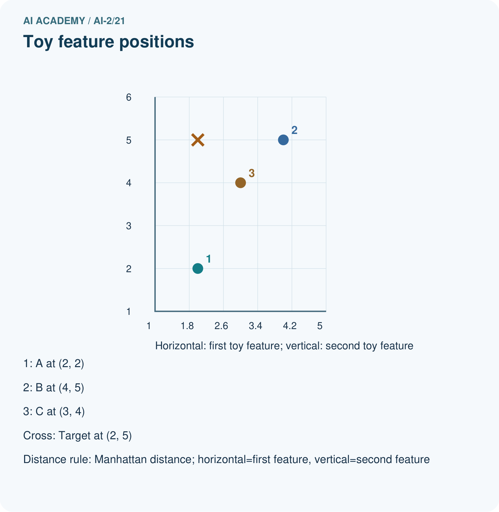
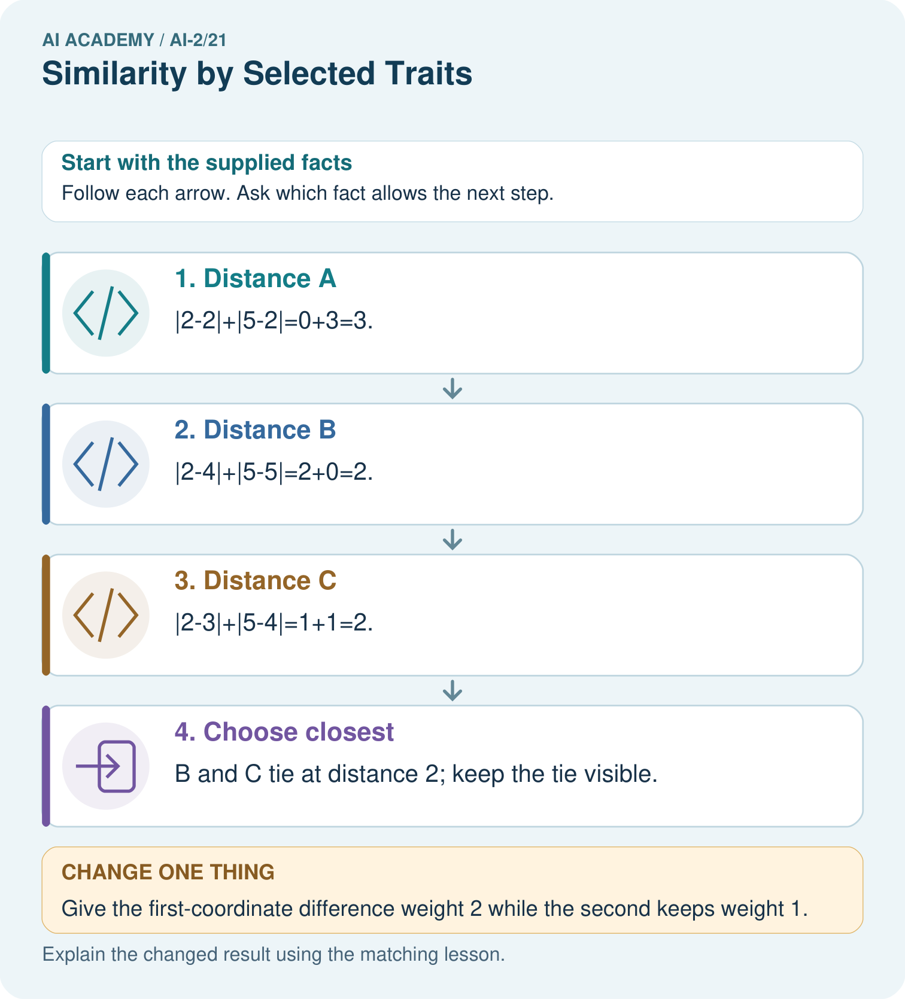

AI Academy · Level 2 · Grade 7 · Week 21 · Teacher guide
Similarity by Selected Traits
Learn to understand, design, build, test and explain AI systems responsibly.
Project: Transparent Book Recommender
Teacher guide · 1 of 6
Similarity by Selected Traits
Teach the learning cycle
Primary target: Represent items with numeric features
| Session | Sequence and minutes | Resources |
|---|---|---|
| Session 1 · Understand · 45 min | 0–7: recall and prerequisite; 7–15: inspect the concrete case and predict; 15–30: teacher models the worked trace; 30–40: learners explain a step using the text and visual; 40–45: check the core idea. | Sections 1–6; record the brief recall in the workbook. |
| Session 2 · Practise · 45 min | 0–5: retrieve the procedure; 5–15: W2 completion practice; 15–23: explain and check with a partner; 23–30: each learner answers the misconception check; 30–40: targeted reteaching or a harder variation; 40–45: prepare the investigation. | Sections 7–10; use the matching workbook W2 and misconception check. |
| Session 3 · Investigate and transfer · 45 min | 0–5: retrieve the decision rule; 5–20: investigate or trace; 20–30: start the independent case; 30–38: connect the project; 38–43: act on feedback; 43–45: plan the return check. | Sections 9 and 11–14. Give extra time to finish the full task set; use Section 15 when the week includes a coding lab. |
This is a starting allocation of 135 minutes, not a validated duration. Preserve all named topics. Schedule extra time for connected examples, the full investigation, independent cases and project building. Repeated copies of a case share one recorded attempt; they are not new evidence.
Retrieval answer guidance
Repair Bias in Data
Without opening the old lesson, explain one key idea from Repair Bias in Data. Give an example and a mistake that the idea helps you avoid.
Look for: Identify selection and coverage bias
Reference example, not the only acceptable wording: Afternoon or evening visitors, and people unable to attend in the morning.
Missing Data
Without opening the old lesson, explain one key idea from Missing Data. Give an example and a mistake that the idea helps you avoid.
Look for: Detect absent and unusable values
Reference example, not the only acceptable wording: 0 is a recorded allowed duration. The other two are unknown under this schema.
Choose Informative Questions
Without opening the old lesson, explain one key idea from Choose Informative Questions. Give an example and a mistake that the idea helps you avoid.
Look for: Fit a root question and leaf predictions from training examples
Reference example, not the only acceptable wording: The root asks near, with branches 0 and 1. Leaves predict clear for 0 and blocked for 1. Depth is one. Training labels determined both leaf majorities and the error comparison that selected near rather than tall.
Use the student module and workbook section with this exact week title. The worked case, independent question and answers below form one aligned lesson sequence.
What the learner must demonstrate
Represent books as [animal,short,illustrated] with 1=yes. Query=[1,1,0]; A=[1,0,0], B=[1,1,1], C=[0,0,0]. Count mismatches. What changes if illustrations matter twice as much?
Concept to explain
Week 21: Similarity by Selected Traits
| Term | Meaning |
|---|---|
| similarity | How alike two items are according to selected features and a declared comparison method. |
| distance | A specified measure of how far apart two representations are. |
| coordinate | A value identifying position along an agreed axis or within a space. |
| scale | The units and range used to represent or compare a quantity. |
Prepare the class
Use the supplied scenario, student illustrations and blank paper. For numeric work, offer counters or a calculator after learners show the setup. Fictional records are supplied; personal data and paid accounts are unnecessary.
Allow 80 minutes: recall 8; explanation 12; worked demonstration 15; guided practice 20; independent assessment 15; project and reflection 10. Extend the lab into a second session when needed.
Preparation for the connected explanation
Teach Week 22 as a two-session investigation using fictional data. A fictional activity chooser represents each activity with energy and group-work ratings on a 0 to 5 scale. A learner requests [2, 4]. We compare options by adding absolute differences. This is a chosen rule for similarity; it is not a learned model or an objective measure of quality. Assess the three stated outcomes through the independent task, not by copying the worked result.
Readiness answer
The absolute difference is 4.
Python 3 editor with a fresh local practice file
Paper trace table and the student workbook
Fictional input records from this lesson; no real student identifiers
End goal for the pictorial case
By the end, I can calculate a feature distance and state how scaling changes its meaning.
This added worked case illustrates the week’s main idea. Retain all original and connected topics; schedule its practice within the teaching cycle.
Teacher guide · 2 of 6
Explain the mechanism
Explain the mechanism
Input → Process → Output
Trace the information. At each stage, ask what changed and how you could test it.
Which stage could fail even when the other two are correct? Explain:
Predict first. Then check each step. A correct answer without visible reasoning is incomplete evidence.
1. Reader target: length=2, difficulty=3.
2. Book A: (2,2) → grid distance |2−2|+|2−3|=1.
3. Book B: (4,3) → distance |4−2|+|3−3|=2.
4. A is closer under these features; changing features can change the answer.
Recalculate, retrace, or restate the reasoning in your own representation:
CHECK Did the evidence answer the exact question? Did the total, path, or source record stay consistent?
Concrete teaching case
Traits are [animals,adventure]. A=[1,1], B=[1,0], C=[0,0]; query=[1,0].
Use number of differing traits as distance.
Exact explanation to model
Distances: A=1, B=0, C=1. B is nearest with equal feature weights.
Explain the added worked example
A fictional activity chooser represents each activity with energy and group-work ratings on a 0 to 5 scale. A learner requests [2, 4]. We compare options by adding absolute differences. This is a chosen rule for similarity; it is not a learned model or an objective measure of quality.
abs gives a nonnegative gap. Under this rule Sketch is closer. Feature order must match: first energy, then group work. Both scales are 0 to 5, but that does not prove one unit has identical practical meaning in both features.
Key terms
| Term | Meaning |
|---|---|
| Feature vector | An ordered list of numeric features |
| Distance | A number describing difference under a chosen rule |
| Manhattan distance | The sum of absolute feature differences |
| Normalization | Rescaling features to a comparable scale |
Model the reasoning aloud
Use the complete worked example below before asking learners to complete W2. Reveal a small part, invite a prediction, then explain the deciding step. These teacher notes contain solutions; do not reveal the independent case answer during modelling.
| Thinking move | Teacher prompt |
|---|---|
| Plan | What is given? What is the question? Which procedure fits these facts? |
| Do | Point to each input and intermediate step in the worked trace. Name the rule that allows the next step. |
| Check | Does the output answer the question? Which assumption or limitation prevents a larger claim? |
Use the diagram and verbal explanation together. Ask learners to match a sentence to a specific visual step; do not assign learners fixed visual or auditory learning styles.
A pictorial worked case: Similarity by Selected Traits
A fictional toy book matcher represents two preferences with numeric features.
The facts we will use
Target vector [2,5]. Candidate A=[2,2], B=[4,5], C=[3,4].
Use Manhattan distance: add absolute coordinate differences; return all smallest-distance candidates.


Read the picture one step at a time
Why this result follows
Each coordinate contributes according to the declared distance rule. Smaller distance means closer in this representation, not automatically a better reading experience. If one coordinate uses a much larger numerical scale, it can dominate the sum even when it is not more important. Feature units and scaling belong in the method record.
What this example does not establish
A toy numeric encoding does not establish meaningful interpersonal distances or suitability of a recommendation.
Change one thing in the pictured case
Change: Give the first-coordinate difference weight 2 while the second keeps weight 1.
Prediction: Distances become A=3, B=4, C=3; A and C tie.
Reason: The representation’s comparison rule changes; the supplied vectors stay the same.
Ask while showing the picture
Cover the result. Ask learners to name the inputs and predict the next step. Uncover one step, connect the icon to the actual procedure, and explain its evidence. Then change the supplied condition and compare. The picture is a representation; it does not document execution of a real AI model.
Teacher guide · 3 of 6
Demonstrate and guide practice
Demonstrate and guide practice
Board sequence
Write the given facts: Traits are [animals,adventure]. A=[1,1], B=[1,0], C=[0,0]; query=[1,0].
Write the question to explain: Use number of differing traits as distance.
Reveal after predictions: Distances: A=1, B=0, C=1. B is nearest with equal feature weights.
Keep for an independent attempt: Score similarity using one point for same topic and one for same difficulty. Target is space, easy. A is space, hard; B is animals, easy. What happens?
Classroom dialogue
Ask: Which facts are given, and which would we have to assume? Learners mark relevant details before discussing answers.
Say: Predict first. Show the rule, information path or calculation that would produce the result. A correct guess is not yet an explanation.
Reveal reasoning one step at a time. Explain why a tempting alternative fails. Write units and denominators for arithmetic, trace conditions for decisions, and identify supporting sources for claims.
In pairs, one learner solves while the other checks evidence; exchange roles. Remove the worked answer before independent assessment.
Model these guided questions
Distances 0 and 2. Zero means identical recorded features, not identical activities in every way. Exit: No. Only the recorded features match; unrecorded needs and activity details may differ.
Case-specific teaching sequence
| Stage | Teacher action |
|---|---|
| Session 1 start to 7 minutes | Retrieve the prerequisite and explain the purpose in the opening section. |
| 7 to 20 minutes | Read the worked example and diagram; ask learners to trace each step aloud. |
| 20 to 33 minutes | Complete W1 and W2, then compare predictions with observed results. |
| 33 to 45 minutes | Collect the guided prediction before running; discuss a mismatch and its cause. |
| Session 2 start to 8 minutes | Retrieve the main rule without showing the previous answer. |
| 8 to 20 minutes | Use W3 to diagnose and repair the stated failure; rerun an earlier case. |
| 20 to 35 minutes | Collect W4 independently, including code or plan, predictions and explanations, before hints. |
| 35 to 45 minutes | Discuss W5 and the exit; use the fresh retry when support was needed. |
Reduce help deliberately
Completion task: From target [1, 2], find distances to A [2, 2] and B [0, 4].
Teacher check: A: 1 + 0 = 1; B: 1 + 2 = 3.
Start by identifying the given inputs together. Leave the intermediate steps blank. If needed, model one step, then withdraw that help on the next step. Move to a full trace only when the partial trace is understood. For partners, alternate explainer and checker; collect a response from every learner before discussion.
Individual reasoning check
Use the worked case for Distance between feature vectors. Proposed explanation: “A successful run proves the conclusion”. Decide whether this explanation is supported. Point to the step or supplied fact that decides; explain your repair if needed.
Expected correction: Similarity depends on the features collected and the distance rule. Missing accessibility, cost or preference information can make the closest item unsuitable. Hard requirements should be checked separately.
Collect explanations, not only yes/no votes. If a misunderstanding is common, re-model the relevant step for the class. If it affects a few learners, give a short targeted group explanation while others solve a more demanding variation.
Pictorial practice question
Explain why B ceases to be a closest option without any candidate data changing.
Reasoned teacher answer
Its first-coordinate gap 2 now contributes 4, raising its distance above A and C’s 3.
Changed-case reasoning: Distances become A=3, B=4, C=3; A and C tie. The representation’s comparison rule changes; the supplied vectors stay the same.
Collect each learner’s explanation before discussion. Use the first missing connection between input, deciding step and result to choose support. This question is worked-case practice, not fresh mastery evidence.
Teacher guide · 4 of 6
Run the weekly evidence lab
Run the weekly evidence lab
Words You Can Use to Reason
A definition matters when you can recognize the idea, use it, and contrast it with a near-miss.
Predict → Test → Record → Explain
Keep expected and actual results separate. Surprises are useful data when recorded honestly.
Plot six books on a 2-feature grid, compute simple grid distance, find nearest, then change one selected feature and compare.
What did the hardest test teach you that the normal test did not?
Make the lab runnable
Use the concrete case as the shared normal case and the independent question as a second case. Each pair creates a boundary or missing-information case and predicts its result before testing. Keep the expected result separate from an observed mistake.
| Record | What to capture |
|---|---|
| Input or evidence | Exact data, instruction or claim |
| Expected result | Answer or safe fallback declared before the run |
| Observed result | Actual result, including errors |
| Explanation | Rule, calculation or evidence explaining the outcome |
| Next test | One justified change and a new prediction |
Diagnose and reteach
For guessing, return to given facts and request a trace. For vocabulary without application, use one example and one non-example. For arithmetic errors, check the setup before the calculation. Finish with a different uncoached case before recording mastery.
Address these additional misconceptions
A successful run proves the conclusion: Similarity depends on the features collected and the distance rule. Missing accessibility, cost or preference information can make the closest item unsuitable. Hard requirements should be checked separately.
Matching the example is enough: Require the new W4 case, explicit predictions and an explanation. Fresh retry: target [2, 3]; X [0, 3], Y [2, 2], Z [3, 4] have distances 2, 1, 2. Y wins and X/Z tie.
A convenient shortcut preserves meaning: If one feature is duration in minutes up to 60 and another a rating up to 5, raw distance may be dominated by duration. Specify scaling or weights before ranking; do not silently change units to get a preferred winner.
Match the support to the first error
| What the response shows | Next teaching action |
|---|---|
| Missing or misread facts | Read the case aloud, mark supplied versus unknown facts, and let the learner restate it. |
| Wrong procedure | Return to the deciding step in the worked case. Contrast it with the proposed incorrect explanation. |
| Arithmetic or implementation error | Trace intermediate values or lines; preserve the first mismatch and retry that step. |
| Correct result without a reason | Ask for a trace and a changed case before marking independent understanding. |
| An unsupported wider claim | Ask which supplied evidence supports the claim and which further observation would be needed. |
Offer an oral explanation, drawing, enlarged visual or fewer examples when that removes a reading/writing barrier. Keep the same reasoning goal. Stretch secure learners by changing a boundary or assumption and asking them to defend the effect, not simply by assigning more of the same questions.
Teacher guide · 5 of 6
Assess and explain the answers
Assess and explain the answers
Worked case answer
Distances: A=1, B=0, C=1. B is nearest with equal feature weights.
Independent question
Score similarity using one point for same topic and one for same difficulty. Target is space, easy. A is space, hard; B is animals, easy. What happens?
Expected independent answer
Each scores one point. The chosen traits create a tie; use a stated tie rule or request another relevant preference.
What counts as evidence
| Criterion | 0 points | 1 point | 2 points |
|---|---|---|---|
| Result | Incorrect or absent | Partly correct | Correct with necessary conditions |
| Reasoning | No supporting trace | Some steps | Clear mechanism, calculation or source support |
| Limit | Overclaims certainty | Vague limitation | Relevant uncertainty or missing fact |
| Transfer | Copies without adapting | Adapts with prompts | Solves a changed case independently |
Use 6/8 as a classroom checkpoint, with 2 required for both Result and Reasoning. This is a proposed teaching rule, not a validated certification threshold. Do not count a coached answer as independent mastery; correct unsafe or unsupported claims regardless of total.
Feedback
Ask the learner to find the evidence that challenges this claim: “Similarity always gives exactly one winner.” Keep the first attempt and an uncoached retry separate.
Original transfer answer
Equal-weight distances are A=1, B=1, C=2. Doubling the illustration mismatch makes A=1, B=2, C=2, so A becomes nearest. Weight choices express a task preference; they are not objective truth about book quality.
Explanations for the additional workbook examples
W1 Read a vector
For [4, 1] under the worked feature order, identify energy and group-work ratings.
Energy 4, group work 1.
Use the declared feature order: position 0 means energy and position 1 means group work. The vector [4,1] therefore records energy 4 and group work 1. Reversing the interpretation would change the meaning and could change the distance calculation.
W2 Compute distances
From target [1, 2], find distances to A [2, 2] and B [0, 4].
A: 1 + 0 = 1; B: 1 + 2 = 3.
W3 Repair feature order
One record uses [group work, energy] while others use [energy, group work]. Why is the distance unreliable?
It compares different meanings in each position. Reorder using the documented schema before computing.
W4 Rank independently
Target is [3, 2]. Options A [1, 2], B [3, 4], C [4, 2]. Calculate distances, select the closest, and identify a tie among the others.
Distances A 2, B 2, C 1. C is closest; A and B tie. Do not claim a unique ranking of the tied pair without a rule.
W5 Limit similarity
Two activities have distance zero. Must they suit every learner equally well?
No. Only the recorded features match; unrecorded needs and activity details may differ.
Assess independent transfer
Selected case: Target is [3, 2]. Options A [1, 2], B [3, 4], C [4, 2]. Calculate distances, select the closest, and identify a tie among the others.
Selected case answer
Distances A 2, B 2, C 1. C is closest; A and B tie. Do not claim a unique ranking of the tied pair without a rule.
| Dimension | Evidence required |
|---|---|
| Explanation | Names the applicable idea or procedure and ties it to the supplied facts. |
| Trace and result | Preserves the given inputs and shows the relevant intermediate steps; distinguishes a prediction from an observed execution. |
| Limits | States the assumptions, missing evidence or conditions under which the result would change. |
Record each dimension as not yet, with support, or independent. Accept a valid alternative procedure with a defensible trace. Do not penalise an honestly recorded model failure if the learner correctly explains its evidence and limits.
Feedback that the learner uses
Name the earliest unsupported step and give one action to repair it. Have the learner make that repair now and explain why. Then assess the relevant skill on a fresh, fully specified case. Confirm it was not previously practised with feedback; solve and check the new case before assigning it. A follow-up design prompt is a starting brief, not automatically an equivalent test.
Teacher guide · 6 of 6
Connect and extend learning
Connect and extend learning
Transparent Book Recommender
Make selected traits and their scales visible in every recommendation explanation.
Keep the decision, input, result, explanation and remaining limitation in the project evidence record. Retrieve this record next week rather than restarting the project.
Support and stretch
Trace one record or condition at a time with counters and labelled columns. Stretch: introduce a tie, boundary or missing field and declare its handling policy before rerunning.
Exit reflection
Ask for one decision the learner can now justify and one situation requiring more evidence or human review. Confidence ratings are separate from correct independent performance.
Bridge to the next week
Next: Week 22: Nearest-Neighbor Reasoning. Retrieve today’s evidence and identify what carries forward and what is new.
Support and fresh reassessment
Use a small square grid and count horizontal plus vertical steps. Extension: rescale a minutes feature by its declared range and compare rankings transparently.
Independent W4 evidence: Distances A 2, B 2, C 1. C is closest; A and B tie. Do not claim a unique ranking of the tied pair without a rule. Record whether the learner needed no help, a hint or explanation. Fresh retry: target [2, 3]; X [0, 3], Y [2, 2], Z [3, 4] have distances 2, 1, 2. Y wins and X/Z tie.
Next week: Weighted scores and constraints. Reuse this week's explicit contracts and evidence.
Plan the delayed return
Suggested return points in this level: ai-2/22, ai-2/24, ai-2/27. Use actual classroom dates, adjusting for holidays and gaps. One, three and six teaching weeks are scheduling choices, not a claimed optimal spacing.
At a delayed check, ask for the idea from memory and a changed application. Compare with the earlier independent response and record support used. For a new level, revisit the previous capstone before checking the new prerequisites.
| Record | Teacher evidence |
|---|---|
| Learner code and date | |
| Concept and case used; prior exposure | |
| Explanation / trace / limits | |
| Support and first repair | |
| Changed case and delayed outcome | |
| Next teaching action |
Use the evidence to choose reteaching or the next step. A completed page, confidence rating or attractive project does not by itself demonstrate understanding.
Project evidence from this case
Specify recommender feature meanings, units, scaling and tie policy before explaining nearest matches.